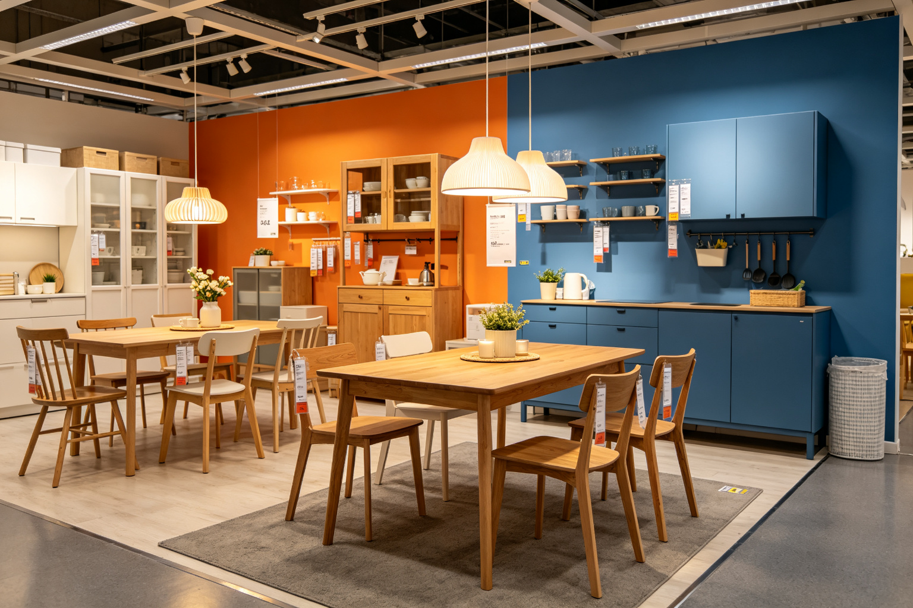

宜家 IKEA · BEA 深度分析
分析日期：2026-09-13 ｜ 品类：家居/零售品牌 ｜ 范式：均衡典雅 ｜ W(T)=0.38 ｜ BEA 评分：87/100
一、情绪基调
宜家给人的第一感受是温暖、实用、可信赖、有设计感但不张扬。它不是奢侈品，也不是廉价货，而是"每个人都能拥有的好设计"。走进宜家，你会感到一种"家"的温暖——不是奢华的家，而是"你也可以拥有这样的生活"的可接近感。
主导范式：均衡典雅（亲 60 : 危 40） - 第一情绪：温暖、实用、可信赖 - 次级情绪：设计感、秩序感、生活美学 - 审美窗口位置：中间偏左，刚柔并济，是"大众能接受的高级感"的标准范式
二、双极构成拆解
亲极元素（约 60%）
| 维度 | 元素 | 极性强度 | 作用 |
|---|---|---|---|
| 形状 | 家具圆角设计、流线型、无尖锐棱角 | P5 | 安全、友好、适合家庭环境 |
| 质感 | 木纹温润、织物柔软、金属件哑光处理 | P6 | 触觉亲和，"家"的温暖感 |
| 色彩 | 原木色、白色、米色为主，低饱和暖色 | P5 | 温暖、明亮、不压抑，适合各种装修风格 |
| 空间 | 展厅生活化布置、动线流畅、灯光柔和 | P6 | 沉浸式"家"的体验，降低购物焦虑 |
| 品牌 | 蓝色黄色 logo、瑞典国旗元素、"为大众创造更美好的日常生活" | P5 | 品牌层的亲和，可信赖、不张扬 |
| 价格 | 平价策略、分期付款、二手回收 | P7 | 极强的"可接近感"，"每个人都能拥有" |
危极元素（约 40%）
| 维度 | 元素 | 极性强度 | 作用 |
|---|---|---|---|
| 形状 | 部分产品的直线设计、几何造型、模块化结构 | T4 | 设计感、现代感，避免全圆角的甜腻 |
| 质感 | 黑色金属件、玻璃、镜面等冷材质的点缀 | T5 | 细节提神，提升高级感 |
| 色彩 | 黑色、深灰、深蓝等深色的使用，强对比配色 | T4 | 制造视觉焦点，避免全暖色的单调 |
| 空间 | 仓库式购物环境、自助提货、扁平包装 | T5 | "效率感""工业感"，与展厅的温暖形成对比 |
| 细节 | 设计师署名、限量系列、合作款（如与 Virgil Abloh 合作） | T4 | 设计价值、收藏价值，提升品牌调性 |
主辅比与层级策略
- 主辅比：亲 60 : 危 40，刚柔各半，以柔领刚
- 层级策略：微差补偿（高级型）——宏观亲和（温暖展厅、平价策略、生活化布置）＋微观危极（设计感产品、冷材质点缀、工业感仓库），远看温暖、近看有设计
- 跨模态一致性：视觉亲和（暖色圆角）＋触觉亲和（温润材质）＋空间亲和（生活化展厅）＋价格亲和（平价策略），四通道协同；同时在每个通道都有适量危极作对比，避免甜腻
- 特殊点：宜家的"自助提货""扁平包装""自己组装"看似是"危极"（麻烦、费力），但实际上被品牌叙事转化为"亲极"——"自己动手的成就感""DIY 的乐趣"。这是 BEA 中"语境调制极性"的经典案例
三、BEA 定位
张力 × 秩序象限
中张力 × 高秩序 = 美感黄金区（偏均衡侧）
- 张力来源：设计感、现代感、冷材质点缀、工业感仓库
- 秩序来源：模块化系统、统一的设计语言、清晰的动线、标准化的产品分类
- 评价：张力适中（不刺激但有设计感），秩序极强（模块化和标准化是宜家的核心竞争力），稳稳落在黄金区
范式定位
柔 ←————————————————————————————————→ 锐
治愈(0.10) 亲和(0.20) 【均衡(0.40)】 崇高(0.55) 冷峻(0.62) 先锋(0.70) |越阈
W(T)=0.38，精准落在均衡典雅范式的核心区间。宜家是均衡典雅范式的"大众市场标杆"——它证明了"刚柔并济"的设计可以被大众接受，并且可以规模化生产。
三级阈值检查
- 本能安全阈：✅ 通过。家具圆角设计，材料安全，符合全球安全标准；儿童产品有专门的安全认证
- 认知处理阈：✅ 通过。产品分类清晰，展厅动线合理，标签信息完整；虽然产品种类多，但有清晰的导航系统
- 文化接受阈：✅ 通过。宜家是全球最成功的家居品牌之一，跨文化接受度高；原木色+白色的基础色板是跨文化通用的"安全色"，同时通过本地化产品适应不同市场
四、BEA 评分卡
| 维度 | 得分 | 评价 |
|---|---|---|
| 双极张力 | 20/25 | 张力适中，有设计感但偏保守；高端系列可以增加更多危极元素 |
| 结构秩序 | 24/25 | 秩序极强——模块化、标准化、清晰动线，是零售品牌的秩序典范 |
| 阈值安全 | 23/25 | 阈值控制极佳，全年龄段、跨文化安全；部分平板包装的组装难度可能是认知阈的小挑战 |
| 语境适配 | 20/25 | 匹配"大众家居"定位，但高端市场和年轻市场的拓展需要更丰富的范式 |
| 总分 | 87/100 | 成熟作品，均衡典雅范式的大众标杆 |
五、核心问题（按优先级）
1. 高端市场的品牌天花板（中优先级）
- 表现：宜家整体偏"平价实用"，在高端家居市场竞争力不足
- BEA 诊断：W(T)=0.38 对大众市场完美，但对高端市场可能偏"柔"；高端消费者的审美窗口更宽，可以接受更高的张力和更独特的设计
- 影响：在与 Muji（偏亲和）、HAY（偏均衡）、Cassina（偏崇高）的竞争中，高端市场份额有限
2. "同质化"危机（中优先级）
- 表现：宜家的设计语言被大量模仿，"宜家风"成为一种"标配"而非"特色"
- BEA 诊断：均衡典雅范式本身就是"安全"的，容易被复制；缺少独特的、高张力的"记忆点"
- 影响：品牌差异化减弱，消费者可能转向更有个性的品牌
3. 可持续性与"快消"模式的矛盾（低优先级）
- 表现：宜家的"低价+高频更换"模式与可持续发展理念有冲突
- BEA 诊断：平价策略（亲极）带来了"可接近感"，但也导致了"用完即弃"的消费模式（危极）；两者在品牌叙事层面有冲突
- 影响：在环保意识增强的背景下，可能影响品牌形象
六、改进处方
处方1：推出高端子品牌，拓展范式边界（建议）
- 具体动作：
- 推出 IKEA Studio 或 IKEA Atelier 高端线，定位"设计师联名+限量生产+高端材料"
- 高端线采用崇高范式（W(T)=0.50-0.55）或冷峻范式（W(T)=0.60-0.65），与主品牌的均衡典雅形成区隔
- 与知名建筑师、设计师、艺术家合作，推出有收藏价值的限量系列
- 预期效果：突破高端市场天花板，提升品牌整体调性；主品牌保持均衡典雅，高端线探索更宽的审美窗口
- BEA 原理：品牌矩阵应该覆盖不同范式，满足不同审美偏好的消费者；用高端线的"危极"提升品牌整体的"张力"
处方2：强化"记忆点"，对抗同质化（建议）
- 具体动作：
- 每年推出 1-2 个"宣言级"产品，设计更大胆、更有张力（W(T)=0.55+）
- 这些产品不追求销量，而是追求"话题性"和"记忆点"
- 比如与 Virgil Abloh 的合作款 Markerad 就是成功案例，应该持续做
- 预期效果：从"安全的均衡"升级为"有记忆点的均衡"，提升品牌差异化
- BEA 原理：均衡范式的风险是"平庸"，需要用少量高张力的"宣言产品"来提神，就像亲和精致范式需要"微差补偿"一样
处方3：重构可持续叙事，把"危极"转化为"亲极"（可选）
- 具体动作：
- 推出"终身保修""以旧换新""二手回收"计划，把"耐用"作为核心卖点
- 设计上强调"可维修""可升级""可拆解"，延长产品生命周期
- 品牌叙事从"低价快消"转向"耐用经典"，把"买一次用很多年"作为亲极卖点
- 预期效果：解决可持续性与快消模式的矛盾，提升品牌的"可信赖感"
- BEA 原理：语境可以调制极性——"自己组装"可以从"麻烦"（危极）转化为"成就感"（亲极），"耐用"也可以从"贵"（危极）转化为"值得投资"（亲极）
七、总结
宜家是均衡典雅范式的大众市场标杆，W(T)=0.38 精准落在范式核心区间，中张力×高秩序的黄金区定位稳固。它用模块化和标准化建立了极强的秩序，用温暖色彩和圆润造型提供了充足的亲和，同时用设计感产品和冷材质点缀注入了适量的危极——"远看温暖、近看有设计"的微差补偿结构堪称大众品牌的典范。
核心优势：秩序极强、微差补偿出色、跨文化接受度高、价格亲和 主要短板：高端市场天花板、同质化危机、可持续性矛盾 改进方向：推出高端子品牌、强化记忆点、重构可持续叙事
BEA 一句话评价：大众设计的标准答案，均衡之美的规模化奇迹；如果能在"安全"中注入更多"记忆点"，它会从"每个人都买"变成"每个人都想收藏"。